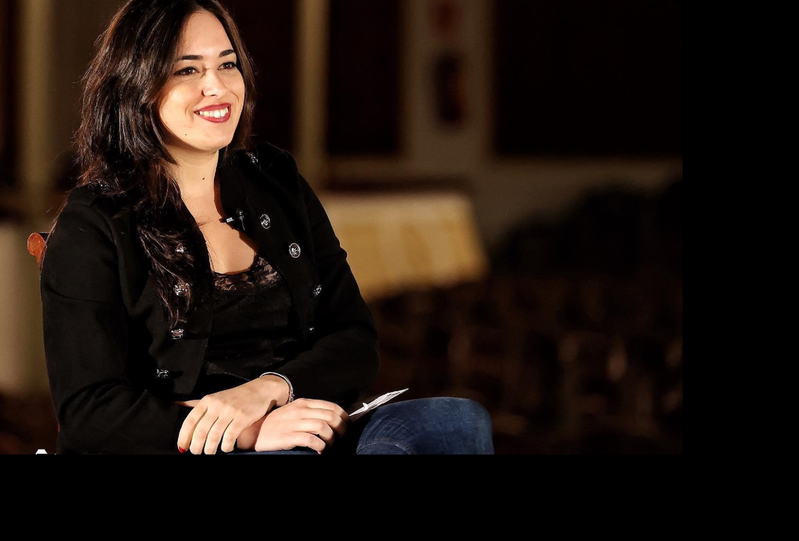

Puro nervio, un culo inquieto de manual. Esa soy yo. A veces más, otras menos. Pero, siempre, decidida a seguir un camino de aprendizaje, entusiasmo y luz. Mi necesidad de expresar, de comunicar, de conectar con otras personas me ha acompañado desde que era una pequeña traviesa con pañales. A pesar de ello, no recuerdo el momento en el que decidí ser periodista. Tampoco nunca he aspirado a ser ‘una sola cosa’. Mi pasión está ligada a la inquietud; al amor por conocer, por descubrir, por explorar constantemente a través de la creatividad. Sin casi darme cuenta, he encontrado una manera de canalizar todo lo que me nace de dentro y me hace vibrar por fuera.
Marina

Diría que soy una comunicadora todoterreno, y en múltiples facetas. Canto, bailo, escribo, trabajo en televisión, delante y detrás de las cámaras; corrijo novelas, presento eventos, elaboro guiones y secciones de todo tipo, y todavía me queda tiempo para estudiar piano. ¡Ah! Y me encanta hacer movidas relacionadas con el mundo de la improvisación teatral y versiones parodia de canciones random. El arte, especialmente la música, es un gran compañero de viaje desde que tengo uso de razón. Mi formación también ha ido encaminada siempre en esa dirección. La vida, para mí, es una senda constante de autodescubrimiento y crecimiento en cada uno de los ámbitos en los que pongo foco y energías. Cada paso que he dado hasta ahora ha sido un soplo de aire fresco para todo lo que está por llegar.
Operación Triunfo (Gestmusic Endemol Shine Group), Mood Z (TV3), Cazamariposas (Mediaset España)...Me siento afortunada de haber empezado mi camino profesional rodeada de personas que han sumado, que han aportado conocimiento donde solo había ilusiones. He aprendido a oír menos y a escuchar mejor. Espero nunca dejar de hacerlo. Tengo los sueños despiertos y el entusiasmo encendido. Amor y pasión. Eso es para mí la plenitud.
TRABAJA CONMIGO
En qué puedo ayudarte
Estos son los servicios que ofrezco Haz click en las imágenes para más información
Televisión
Locuciones
Eventos
CONTACT
ESCRÍBEME
Me encantará colaborar contigo!
Barcelona, España
Email: marina.vallejo@protonmail.com